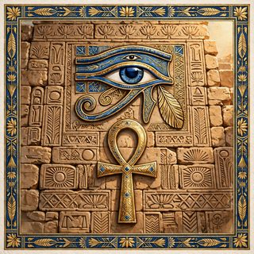

相手（CPU）
8000
—
読み込み中…
自分
8000
—
その他
演出設定
—
自分の手札（
0
）
×
盤面を見る
トトと簡易デュエル
CPUとの1対1。デッキと先攻を選んで開始。
自分のデッキ

イシズ
44枚／墓地を入れ替える逆転のデッキ
ゲート・ガーディアン
40枚／三魔神の合体と壁のデッキ
相手のデッキ
イシズ
44枚／墓地を入れ替える逆転のデッキ
ゲート・ガーディアン
40枚／三魔神の合体と壁のデッキ
先攻・後攻
先攻
後攻
ランダム
チェーン確認
おまかせ
「聞かない」設定だけ自動パス
毎回
すべてのチェーンで聞く
自動
必須以外は聞かずにパス
召喚カットイン
出す
出さない
音
オン
読み込み中…
読み込み中…
VS
—
—
同じ設定でもう1戦
タイトルに戻る